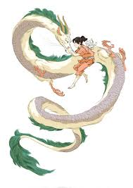

Haku
Nigihayami Kohakunushi, referido em grande parte do filme pelo nome que Yubaba lhe dá: Haku, é o protagonista do filme de animação A Viagem de Chihiro de 2001.
Habilidades
Como espírito do rio, Haku possui poderes sobrenaturais que estão principalmente associados ao elemento água.
Personalidade
Haku tem múltiplas personalidades. Ele pode às vezes ser bondoso e solidário, outras vezes rigoroso e de grande força. Ele é sábio e é capaz de agir de acordo com a situação. Ele está mais do que disposto a se arriscar quando se preocupa com alguém. Desde o início da história, até o final, ele faz tudo ao seu alcance para manter Chihiro ilesa e para ajudá-la a sair em segurança. Sua firme determinação ajuda Chihiro a finalmente confiar nele, em meio a informações contraditórias de outros personagens do filme a seu respeito.
Haku sempre disse ser confiável nele. Entretanto, Lin, não estava certo das intenções de Haku e disse a Chihiro para não confiar nele. A irmã gêmea de Yubaba, Zeniba, insistiu que Haku é um ladrão ganancioso, que havia roubado seu selo dourado. No final, Chihiro coloca sua fé em Haku. Mais tarde, é revelado que Haku é escravo de Yubaba, que o controlava com um verme negro em seu corpo.
Aparência física
Haku parece ter cerca de 12 anos de idade física. Ele tem cabelos lisos, verdes escuros em um corte de cabelo de "tigela", olhos verdes e inclinados. Quando é humano, Haku veste um tradicional manto branco que se parece muito com um Kariginu amarrado com uma faixa de lavanda, um curto Sashinuki tradicional tingido de índigo (um tipo de kuribakama) por baixo, e sandálias beges. Um Hitoe azul mais escuro pode ser visto pelos lados e ombros das túnicas. Quando ele se transforma em sua forma de dragão, ele tem uma crina de marreco e hortelã verde, com um corpo branco e escamado.